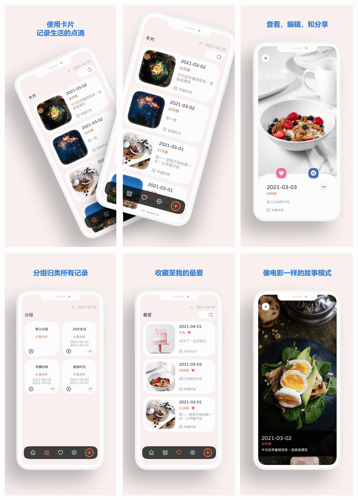
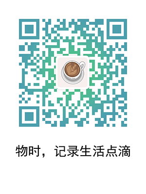

1. 背景
前一段时间公司因为资金问题解散了，我也有点厌倦了不断地加班，再加上资金可以维持一段时间，所以就果断尝试一下一直以来想做的事情，自由职业者，成为一名独立开发者。
之前一直在游戏公司，主要做Unity客户端开发，做过休闲游戏，SLG，MMO，有的项目上线了，有的项目也因为公司非技术问题死在开发过程中，这些就不是我们开发人员所能控制的了。
对于做独立开发者，我主要熟练的技术就是Unity了，的以就用了Unity来开发产品。今天要说的是用Unity来开发App。
Unity是游戏引擎，对于开发游戏来说，很合适，但是用来开发App，也不是不可以。主要看要开发的产品是什么，以及产品所需要做的功能，对于用Unity来实现，是否有致命的问题。
我觉得技术是为产品服务的，对于独立开发者来说，用自己最熟悉的技术，做出想做的产品，就是很不错的，大可不必纠结于应该用哪一项技术，先做出来。当然，开心最重要，自己说的算。
2. 我刚上线的产品，物时 (OMoment)
我刚刚上线的产品，是一个记录生活点滴的App。通过一张图片，一段文字，可以记录某一个时刻，可以知道曾经的时刻距离现在已经过去多久，也可以使用分组追踪某一个系列的东西。一个分组也可以使用故事模式来回放整个过程。例如记录每日的早餐，自己的健身过程，一个件东西的开启时间，等等。

目前只有iOS版本，可以从通过AppStore下载
https://apps.apple.com/app/id1559510055

3. 使用 Unity 开发 App 的优点
使用Unity开发App，大部分是UI部分的工作，我主要使用的是UGUI。Unity有一个UIWidget，类似Flutter的东西，我并没有使用，我觉得UGUI更方便一点。
可视化的UI布局，这点太方便了，效率很高。
一些组件，直接做成一个Prefab，其他模块直接拖出来就可以用。
可以很方便的添加各种效果，例如按钮点击音效，背景音乐，游戏中的各涂特效，也可以在App中合适的地方使用，我在物时中内购成功后，就加了一个炸烟花的效果。
可以像游戏一样做功能和资源热更新，前提是使用Lua之类的方式实现逻辑。
UI管理模块做好了以后，后面的App可以直接使用，只要实现具体UI逻辑就好了。
各种第三方SDK，使用广告，数据统计，对于Unity都有很好的支持，接入很方便。
Unity跨平台，整个App大部分的逻辑不用分平台，只特定的，使用内购，第三方SDK之类的，才需要考虑平台相关的逻辑。
有人说运行效率会低，费电，其实还好啦。
4. 使用 Unity 开发 App 的缺点
涉及到iOS和Android系统相关的东西，需要自己实现，使用从左边往右边滑动，切换页面，点击返回按钮，返回上一个页面，这一类需要自己在UI模块中实现逻辑。
原生输入框，Unity的输入框，不能像原生开发那样定制，对于一般的App，够用。但是如果文本输入对于App是一个很核心的需求，那可能就有点蛋疼了，特别是多行输入的时候。虽然有第三方插件，模拟了原生输入框，但是还是不够完美。
可能还有一些原生功能，也不那么完美，只是我的App中没有用到，这个要视具体产品来评估到底是否适合用Unity开发。